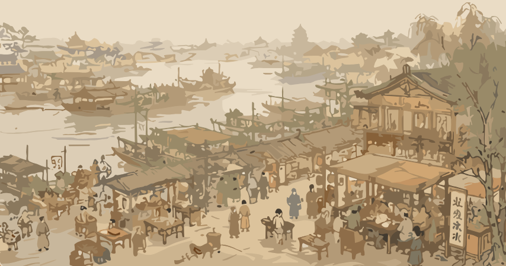

汴京烟火·汴河晨食
漕运水网·晨间市井的消费与物流
更鼓计时：卯时初刻
晨光微明 响鼓报晓
场景三段拆解

上段：虹桥漕运码头

中段：潘楼街市井早市

下段：马行街街巷摊贩
开市时段
交五更至早饭
核心地标
汴河/潘楼街
主力人群
市民/漕运水手
代表品类
早点/茶汤
消费价位
十数文至半百
市井特征
烟火漕运
市井人物漫游图鉴
漕运船夫
汴水河上的水手，支撑汴京后勤物流
早点摊主
清晨早市售卖粥羹茶汤的城市商贩
赶集老者
早起采买食材、品尝早茶的市井老人
文人市民
偶尔起早记录笔记的文人士大夫
宋代风物志签
煎点汤茶药
5文至10文
羊肉肚肺
荤腥早点20文
粥羹点心
平民主食10文
馓子油饼
酥脆扛饿6文
汤饼
热气腾腾面食
烧饼
现烤出炉主食
每日交五更，诸寺院行者打铁牌子或木鱼，循门报晓……
诸门桥市井已开，卖粥羹、点心、茶汤，直至早饭罢方罢。
诸门桥市井已开，卖粥羹、点心、茶汤，直至早饭罢方罢。
【白话浅译】
每天临近五更天，各大寺院的头陀按规律敲击铁牌或木鱼，沿街报晓。
各大城门和桥头的街市早开张，供人喝热茶。
汴京全图界画落位互动
📍
📍
📍
📍
📍
📍
✖
 界画落位
界画落位
📌 汴河/潘楼街 - 水门晓市
宋制计时标识 » 更鼓
考据源：
《梦华录》卷注：
诸门桥市井已开，卖粥羹、点心、茶汤。直至早饭罢方罢。
《梦华录》卷注：
诸门桥市井已开，卖粥羹、点心、茶汤。直至早饭罢方罢。
【白话解构与说明】
桥市早已开张，人们排队喝粥羹热茶，市井水运繁忙。
桥市早已开张，人们排队喝粥羹热茶，市井水运繁忙。
✖
 界画落位
界画落位
📌 大相国寺 - 万姓交易
宋制计时标识 » 日晷
考据源：
《梦华录》卷注：
每月五次开放，万姓交易。飞禽珍玩无所不有。
《梦华录》卷注：
每月五次开放，万姓交易。飞禽珍玩无所不有。
【白话解构与说明】
每月五日庙会大集，商贾云集，从古玩百货到飞禽走兽应有尽有。
每月五日庙会大集，商贾云集，从古玩百货到飞禽走兽应有尽有。
✖
 界画落位
界画落位
📌 游春园林 - 锦绣春游
宋制计时标识 » 漏壶
考据源：
《梦华录》卷注：
士女靓妆，遍游园林，罗绮飘香，车马阗塞。
《梦华录》卷注：
士女靓妆，遍游园林，罗绮飘香，车马阗塞。
【白话解构与说明】
春日男女游林散心，身着各色宋服锦绣罗绮，到处阵阵异香。
春日男女游林散心，身着各色宋服锦绣罗绮，到处阵阵异香。
✖
 界画落位
界画落位
📌 桑家瓦子 - 勾栏演艺
宋制计时标识 » 暮钟
考据源：
《梦华录》卷注：
在京瓦肆伎艺，讲史、杂剧、傀儡戏，不以风雨寒暑。
《梦华录》卷注：
在京瓦肆伎艺，讲史、杂剧、傀儡戏，不以风雨寒暑。
【白话解构与说明】
瓦舍中戏棚林立，看客们不受天气影响，日夜看戏赏玩倒彩。
瓦舍中戏棚林立，看客们不受天气影响，日夜看戏赏玩倒彩。
✖
 界画落位
界画落位
📌 州桥夜市 - 深夜食棚
宋制计时标识 » 香篆
考据源：
《梦华录》卷注：
夜市直至三更尽，卖沙糖冰雪冷元子通宵不绝。
《梦华录》卷注：
夜市直至三更尽，卖沙糖冰雪冷元子通宵不绝。
【白话解构与说明】
州桥和御街夜市人潮涌动，商贩连夜售卖各种解馋的水果甜品与冷元子。
州桥和御街夜市人潮涌动，商贩连夜售卖各种解馋的水果甜品与冷元子。
✖
 界画落位
界画落位
📌 宣德楼大内 - 皇城节序
宋制计时标识 » 罗盘
考据源：
《梦华录》卷注：
大内绞缚山棚，游人集御街两廊下，奇术异能连番。
《梦华录》卷注：
大内绞缚山棚，游人集御街两廊下，奇术异能连番。
【白话解构与说明】
皇城之下搭建如山彩灯，百姓和皇帝同赴元宵盛会，狂欢达旦。
皇城之下搭建如山彩灯，百姓和皇帝同赴元宵盛会，狂欢达旦。
曹婆婆肉饼
出自《东京梦华录》场景：曹婆婆肉饼
粥羹
出自《东京梦华录》场景：粥羹
煎茶
出自《东京梦华录》场景：煎茶
虹桥漕船
出自《东京梦华录》场景：虹桥漕船
船夫号子
出自《东京梦华录》场景：船夫号子
梦华录·其余卷宗延伸推荐
卷二·东角楼街巷
卷三·相国寺万姓
卷七·清明节
卷五·京瓦伎艺
卷二·州桥夜市
卷六·上元节
卷二·东角楼街巷 (相关卷宗)
《东京梦华录》古本记录：
该卷详细拆解了对应城市生活的内容，通过孟元老的视角，还原了宋代从地缘、饮食、穿着到社会结构的完整画卷。
📌 本卷延伸阅读：高度关联：汴河晨食/潘楼早市原文摘录：东角楼街巷，城南城北皆聚集百货
卷三·相国寺万姓 (相关卷宗)
《东京梦华录》古本记录：
该卷详细拆解了对应城市生活的内容，通过孟元老的视角，还原了宋代从地缘、饮食、穿着到社会结构的完整画卷。
📌 本卷延伸阅读：高度关联：相国万货原文摘录：大相国寺每月五次开放万姓交易
卷七·清明节 (相关卷宗)
《东京梦华录》古本记录：
该卷详细拆解了对应城市生活的内容，通过孟元老的视角，还原了宋代从地缘、饮食、穿着到社会结构的完整画卷。
📌 本卷延伸阅读：高度关联：锦绣衣冠原文摘录：清明日，士女靓妆，遍游园林
卷五·京瓦伎艺 (相关卷宗)
《东京梦华录》古本记录：
该卷详细拆解了对应城市生活的内容，通过孟元老的视角，还原了宋代从地缘、饮食、穿着到社会结构的完整画卷。
📌 本卷延伸阅读：高度关联：瓦舍百戏原文摘录：大小勾栏数千座，其中桑家瓦子最大
卷二·州桥夜市 (相关卷宗)
《东京梦华录》古本记录：
该卷详细拆解了对应城市生活的内容，通过孟元老的视角，还原了宋代从地缘、饮食、穿着到社会结构的完整画卷。
📌 本卷延伸阅读：高度关联：州桥夜食原文摘录：州桥夜市直至三更尽，才五更又复开张
卷六·上元节 (相关卷宗)
《东京梦华录》古本记录：
该卷详细拆解了对应城市生活的内容，通过孟元老的视角，还原了宋代从地缘、饮食、穿着到社会结构的完整画卷。
📌 本卷延伸阅读：高度关联：岁时节序原文摘录：正月十五元宵，大内前缚山棚灯毬